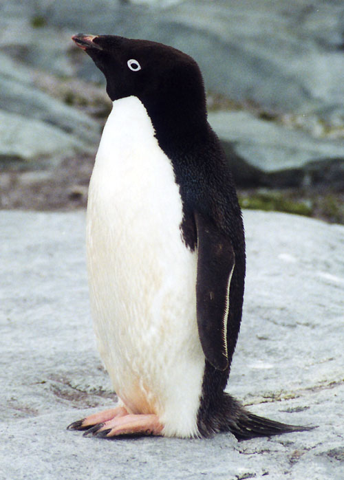

Pinguim imperador
O pinguim imperador é a maior espécie de pinguim, conhecido por sua resistência ao frio extremo e por ser o único que se reproduz durante o inverno antártico. Eles podem atingir até 1,2 metros de altura e pesar até 40 kg.

Pinguim adelia
O pinguim Adélia é uma das espécies mais comuns na Antártida, conhecido por seu bico curto e plumagem preta e branca. Eles são ágeis nadadores e se alimentam principalmente de krill e peixes.

Pinguim gentoo
O pinguim Gentoo é facilmente reconhecível por sua faixa branca na cabeça e bico laranja. Eles são conhecidos por serem os pinguins mais rápidos, podendo nadar a velocidades de até 36 km/h.
Pinguim barbicha
O pinguim Barbicha é conhecido por suas penas longas e finas que se assemelham a uma barba. Eles são encontrados principalmente nas ilhas subantárticas e são conhecidos por sua vocalização distinta.
.jpg)
Pinguim macaroni
O pinguim Macaroni é facilmente reconhecível por sua crista amarela brilhante. Eles são conhecidos por serem os pinguins mais barulhentos e podem ser encontrados em grandes colônias nas ilhas subantárticas.

.jpg)
.jpg)
.jpg)